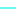

<!doctype html>
<html lang="en">
    <head>
        <meta charset="utf-8">
        <meta http-equiv="X-UA-Compatible" content="IE=edge">
        <meta name="viewport" content="initial-scale=1,user-scalable=no,maximum-scale=1,width=device-width">
        <meta name="mobile-web-app-capable" content="yes">
        <meta name="apple-mobile-web-app-capable" content="yes">
        <link rel="stylesheet" href="css/leaflet.css"><link rel="stylesheet" href="css/L.Control.Locate.min.css">
        <link rel="stylesheet" href="css/qgis2web.css"><link rel="stylesheet" href="css/fontawesome-all.min.css">
        <link rel="stylesheet" href="css/leaflet-search.css">
        <link rel="stylesheet" href="css/leaflet-control-geocoder.Geocoder.css">
        <link rel="stylesheet" href="css/leaflet-measure.css">
        <style>
        html, body, #map {
            width: 100%;
            height: 100%;
            padding: 0;
            margin: 0;
        }
        </style>
        <title>Atlas river.qgz (offline)</title>
    </head>
    <body>
        <div id="map">
        </div>
        <script src="js/qgis2web_expressions.js"></script>
        <script src="js/leaflet.js"></script><script src="js/L.Control.Locate.min.js"></script>
        <script src="js/leaflet.rotatedMarker.js"></script>
        <script src="js/leaflet.pattern.js"></script>
        <script src="js/leaflet-hash.js"></script>
        <script src="js/Autolinker.min.js"></script>
        <script src="js/rbush.min.js"></script>
        <script src="js/labelgun.min.js"></script>
        <script src="js/labels.js"></script>
        <script src="js/leaflet-control-geocoder.Geocoder.js"></script>
        <script src="js/leaflet-measure.js"></script>
        <script src="js/leaflet-search.js"></script>
        <script src="data/Gromad_Rozd_3.js"></script>
        <script src="data/Rozdilna_district_5.js"></script>
        <script src="data/River_Rozd_6.js"></script>
        <script>
        var highlightLayer;
        function highlightFeature(e) {
            highlightLayer = e.target;
            highlightLayer.openPopup();
        }
        var map = L.map('map', {
            zoomControl:true, maxZoom:28, minZoom:1
        })
        var hash = new L.Hash(map);
        map.attributionControl.setPrefix('<a href="https://github.com/tomchadwin/qgis2web" target="_blank">qgis2web</a> &middot; <a href="https://leafletjs.com" title="A JS library for interactive maps">Leaflet</a> &middot; <a href="https://qgis.org">QGIS</a>');
        var autolinker = new Autolinker({truncate: {length: 30, location: 'smart'}});
        function removeEmptyRowsFromPopupContent(content, feature) {
         var tempDiv = document.createElement('div');
         tempDiv.innerHTML = content;
         var rows = tempDiv.querySelectorAll('tr');
         for (var i = 0; i < rows.length; i++) {
             var td = rows[i].querySelector('td.visible-with-data');
             var key = td ? td.id : '';
             if (td && td.classList.contains('visible-with-data') && feature.properties[key] == null) {
                 rows[i].parentNode.removeChild(rows[i]);
             }
         }
         return tempDiv.innerHTML;
        }
        L.control.locate({locateOptions: {maxZoom: 19}}).addTo(map);
        var measureControl = new L.Control.Measure({
            position: 'topleft',
            primaryLengthUnit: 'meters',
            secondaryLengthUnit: 'kilometers',
            primaryAreaUnit: 'sqmeters',
            secondaryAreaUnit: 'hectares'
        });
        measureControl.addTo(map);
        document.getElementsByClassName('leaflet-control-measure-toggle')[0]
        .innerHTML = '';
        document.getElementsByClassName('leaflet-control-measure-toggle')[0]
        .className += ' fas fa-ruler';
        var bounds_group = new L.featureGroup([]);
        function setBounds() {
            if (bounds_group.getLayers().length) {
                map.fitBounds(bounds_group.getBounds());
            }
            map.setMaxBounds(map.getBounds());
        }
        map.createPane('pane_OSMStandard_0');
        map.getPane('pane_OSMStandard_0').style.zIndex = 400;
        var layer_OSMStandard_0 = L.tileLayer('http://tile.openstreetmap.org/{z}/{x}/{y}.png', {
            pane: 'pane_OSMStandard_0',
            opacity: 1.0,
            attribution: '<a href="https://www.openstreetmap.org/copyright">© OpenStreetMap contributors, CC-BY-SA</a>',
            minZoom: 1,
            maxZoom: 28,
            minNativeZoom: 0,
            maxNativeZoom: 19
        });
        layer_OSMStandard_0;
        map.createPane('pane_Visicomukr_1');
        map.getPane('pane_Visicomukr_1').style.zIndex = 401;
        var layer_Visicomukr_1 = L.tileLayer('https://tms.visicom.ua/2.0.0/planet3/base/{z}/{x}/{-y}.png', {
            pane: 'pane_Visicomukr_1',
            opacity: 1.0,
            attribution: '',
            minZoom: 1,
            maxZoom: 28,
            minNativeZoom: 0,
            maxNativeZoom: 19
        });
        layer_Visicomukr_1;
        map.createPane('pane_GoogleHybrid_2');
        map.getPane('pane_GoogleHybrid_2').style.zIndex = 402;
        var layer_GoogleHybrid_2 = L.tileLayer('https://mt1.google.com/vt/lyrs=y&x={x}&y={y}&z={z}', {
            pane: 'pane_GoogleHybrid_2',
            opacity: 1.0,
            attribution: '<a href="https://www.google.at/permissions/geoguidelines/attr-guide.html">Map data ©2015 Google</a>',
            minZoom: 1,
            maxZoom: 28,
            minNativeZoom: 0,
            maxNativeZoom: 20
        });
        layer_GoogleHybrid_2;
        map.addLayer(layer_GoogleHybrid_2);
        function pop_Gromad_Rozd_3(feature, layer) {
            layer.on({
                mouseout: function(e) {
                    if (typeof layer.closePopup == 'function') {
                        layer.closePopup();
                    } else {
                        layer.eachLayer(function(feature){
                            feature.closePopup()
                        });
                    }
                },
                mouseover: highlightFeature,
            });
            var popupContent = '<table>\
                    <tr>\
                        <td colspan="2">' + (feature.properties['ADMIN_1'] !== null ? autolinker.link(feature.properties['ADMIN_1'].toLocaleString()) : '') + '</td>\
                    </tr>\
                    <tr>\
                        <td colspan="2">' + (feature.properties['ADMIN_2'] !== null ? autolinker.link(feature.properties['ADMIN_2'].toLocaleString()) : '') + '</td>\
                    </tr>\
                    <tr>\
                        <td class="visible-with-data" id="ADMIN_3"colspan="2"><strong>Назва громади</strong><br />' + (feature.properties['ADMIN_3'] !== null ? autolinker.link(feature.properties['ADMIN_3'].toLocaleString()) : '') + '</td>\
                    </tr>\
                    <tr>\
                        <td colspan="2">' + (feature.properties['TYPE'] !== null ? autolinker.link(feature.properties['TYPE'].toLocaleString()) : '') + '</td>\
                    </tr>\
                    <tr>\
                        <td colspan="2">' + (feature.properties['KOATUU_old'] !== null ? autolinker.link(feature.properties['KOATUU_old'].toLocaleString()) : '') + '</td>\
                    </tr>\
                    <tr>\
                        <td class="visible-with-data" id="Bas"colspan="2"><strong>Bas</strong><br />' + (feature.properties['Bas'] !== null ? autolinker.link(feature.properties['Bas'].toLocaleString()) : '') + '</td>\
                    </tr>\
                    <tr>\
                        <td class="visible-with-data" id="Sgrom, ga"colspan="2"><strong>Sgrom, ga</strong><br />' + (feature.properties['Sgrom, ga'] !== null ? autolinker.link(feature.properties['Sgrom, ga'].toLocaleString()) : '') + '</td>\
                    </tr>\
                    <tr>\
                        <td class="visible-with-data" id="Density_ri"colspan="2"><strong>Density_ri</strong><br />' + (feature.properties['Density_ri'] !== null ? autolinker.link(feature.properties['Density_ri'].toLocaleString()) : '') + '</td>\
                    </tr>\
                    <tr>\
                        <td class="visible-with-data" id="% басе"colspan="2"><strong>% басе</strong><br />' + (feature.properties['% басе'] !== null ? autolinker.link(feature.properties['% басе'].toLocaleString()) : '') + '</td>\
                    </tr>\
                </table>';
            layer.bindPopup(popupContent, {maxHeight: 400});
            var popup = layer.getPopup();
            var content = popup.getContent();
            var updatedContent = removeEmptyRowsFromPopupContent(content, feature);
            popup.setContent(updatedContent);
        }

        function style_Gromad_Rozd_3_0() {
            return {
                pane: 'pane_Gromad_Rozd_3',
                opacity: 1,
                color: 'rgba(235,29,214,0.822)',
                dashArray: '15.0,3.0,6.0,3.0,6.0,3.0',
                lineCap: 'butt',
                lineJoin: 'miter',
                weight: 3.0, 
                fillOpacity: 0,
                interactive: false,
            }
        }
        map.createPane('pane_Gromad_Rozd_3');
        map.getPane('pane_Gromad_Rozd_3').style.zIndex = 403;
        map.getPane('pane_Gromad_Rozd_3').style['mix-blend-mode'] = 'multiply';
        var layer_Gromad_Rozd_3 = new L.geoJson(json_Gromad_Rozd_3, {
            attribution: '',
            interactive: false,
            dataVar: 'json_Gromad_Rozd_3',
            layerName: 'layer_Gromad_Rozd_3',
            pane: 'pane_Gromad_Rozd_3',
            onEachFeature: pop_Gromad_Rozd_3,
            style: style_Gromad_Rozd_3_0,
        });
        bounds_group.addLayer(layer_Gromad_Rozd_3);
        map.addLayer(layer_Gromad_Rozd_3);
        map.createPane('pane_SRTM_Rozd_4');
        map.getPane('pane_SRTM_Rozd_4').style.zIndex = 404;
        var img_SRTM_Rozd_4 = 'data/SRTM_Rozd_4.png';
        var img_bounds_SRTM_Rozd_4 = [[46.614027778,29.495416667],[47.530972222,30.495416667]];
        var layer_SRTM_Rozd_4 = new L.imageOverlay(img_SRTM_Rozd_4,
                                              img_bounds_SRTM_Rozd_4,
                                              {pane: 'pane_SRTM_Rozd_4'});
        bounds_group.addLayer(layer_SRTM_Rozd_4);
        function pop_Rozdilna_district_5(feature, layer) {
            layer.on({
                mouseout: function(e) {
                    if (typeof layer.closePopup == 'function') {
                        layer.closePopup();
                    } else {
                        layer.eachLayer(function(feature){
                            feature.closePopup()
                        });
                    }
                },
                mouseover: highlightFeature,
            });
            var popupContent = '<table>\
                    <tr>\
                        <th scope="row">ADMIN_3</th>\
                        <td class="visible-with-data" id="ADMIN_3">' + (feature.properties['ADMIN_3'] !== null ? autolinker.link(feature.properties['ADMIN_3'].toLocaleString()) : '') + '</td>\
                    </tr>\
                    <tr>\
                        <td colspan="2">' + (feature.properties['KOATUU_old'] !== null ? autolinker.link(feature.properties['KOATUU_old'].toLocaleString()) : '') + '</td>\
                    </tr>\
                    <tr>\
                        <td class="visible-with-data" id="S dist, ga"colspan="2"><strong>Площа, га</strong><br />' + (feature.properties['S dist, ga'] !== null ? autolinker.link(feature.properties['S dist, ga'].toLocaleString()) : '') + '</td>\
                    </tr>\
                    <tr>\
                        <td class="visible-with-data" id="Density_ri"colspan="2"><strong>Density_ri</strong><br />' + (feature.properties['Density_ri'] !== null ? autolinker.link(feature.properties['Density_ri'].toLocaleString()) : '') + '</td>\
                    </tr>\
                </table>';
            layer.bindPopup(popupContent, {maxHeight: 400});
            var popup = layer.getPopup();
            var content = popup.getContent();
            var updatedContent = removeEmptyRowsFromPopupContent(content, feature);
            popup.setContent(updatedContent);
        }

        function style_Rozdilna_district_5_0() {
            return {
                pane: 'pane_Rozdilna_district_5',
                opacity: 1,
                color: 'rgba(194,20,23,1.0)',
                dashArray: '15.0,3.0,6.0,3.0,6.0,3.0',
                lineCap: 'butt',
                lineJoin: 'miter',
                weight: 3.0, 
                fill: true,
                fillOpacity: 1,
                fillColor: 'rgba(145,82,45,0.0)',
                interactive: false,
            }
        }
        map.createPane('pane_Rozdilna_district_5');
        map.getPane('pane_Rozdilna_district_5').style.zIndex = 405;
        map.getPane('pane_Rozdilna_district_5').style['mix-blend-mode'] = 'normal';
        var layer_Rozdilna_district_5 = new L.geoJson(json_Rozdilna_district_5, {
            attribution: '',
            interactive: false,
            dataVar: 'json_Rozdilna_district_5',
            layerName: 'layer_Rozdilna_district_5',
            pane: 'pane_Rozdilna_district_5',
            onEachFeature: pop_Rozdilna_district_5,
            style: style_Rozdilna_district_5_0,
        });
        bounds_group.addLayer(layer_Rozdilna_district_5);
        map.addLayer(layer_Rozdilna_district_5);
        function pop_River_Rozd_6(feature, layer) {
            layer.on({
                mouseout: function(e) {
                    if (typeof layer.closePopup == 'function') {
                        layer.closePopup();
                    } else {
                        layer.eachLayer(function(feature){
                            feature.closePopup()
                        });
                    }
                },
                mouseover: highlightFeature,
            });
            var popupContent = '<table>\
                    <tr>\
                        <td class="visible-with-data" id="natural"colspan="2"><strong>Басейн</strong><br />' + (feature.properties['natural'] !== null ? autolinker.link(feature.properties['natural'].toLocaleString()) : '') + '</td>\
                    </tr>\
                    <tr>\
                        <th scope="row">Назва річки</th>\
                        <td class="visible-with-data" id="name">' + (feature.properties['name'] !== null ? autolinker.link(feature.properties['name'].toLocaleString()) : '') + '</td>\
                    </tr>\
                    <tr>\
                        <th scope="row">Які райони перетинає</th>\
                        <td class="visible-with-data" id="peret ray">' + (feature.properties['peret ray'] !== null ? autolinker.link(feature.properties['peret ray'].toLocaleString()) : '') + '</td>\
                    </tr>\
                    <tr>\
                        <th scope="row">Довжина по області, км</th>\
                        <td class="visible-with-data" id="Lenth,km">' + (feature.properties['Lenth,km'] !== null ? autolinker.link(feature.properties['Lenth,km'].toLocaleString()) : '') + '</td>\
                    </tr>\
                    <tr>\
                        <th scope="row">Lenth_Dist</th>\
                        <td class="visible-with-data" id="Lenth_Dist">' + (feature.properties['Lenth_Dist'] !== null ? autolinker.link(feature.properties['Lenth_Dist'].toLocaleString()) : '') + '</td>\
                    </tr>\
                    <tr>\
                        <th scope="row">Water_gath</th>\
                        <td class="visible-with-data" id="Water_gath">' + (feature.properties['Water_gath'] !== null ? autolinker.link(feature.properties['Water_gath'].toLocaleString()) : '') + '</td>\
                    </tr>\
                    <tr>\
                        <th scope="row">Lenth_Grom</th>\
                        <td class="visible-with-data" id="Lenth_Grom">' + (feature.properties['Lenth_Grom'] !== null ? autolinker.link(feature.properties['Lenth_Grom'].toLocaleString()) : '') + '</td>\
                    </tr>\
                    <tr>\
                        <td colspan="2">' + (feature.properties['Клас'] !== null ? autolinker.link(feature.properties['Клас'].toLocaleString()) : '') + '</td>\
                    </tr>\
                </table>';
            layer.bindPopup(popupContent, {maxHeight: 400});
            var popup = layer.getPopup();
            var content = popup.getContent();
            var updatedContent = removeEmptyRowsFromPopupContent(content, feature);
            popup.setContent(updatedContent);
        }

        function style_River_Rozd_6_0(feature) {
            switch(String(feature.properties['Клас'])) {
                case 'Велика річка':
                    return {
                pane: 'pane_River_Rozd_6',
                opacity: 1,
                color: 'rgba(3,65,251,1.0)',
                dashArray: '',
                lineCap: 'square',
                lineJoin: 'bevel',
                weight: 4.0,
                fillOpacity: 0,
                interactive: true,
            }
                    break;
                case 'Мала річка':
                    return {
                pane: 'pane_River_Rozd_6',
                opacity: 1,
                color: 'rgba(2,247,247,1.0)',
                dashArray: '',
                lineCap: 'square',
                lineJoin: 'bevel',
                weight: 1.0,
                fillOpacity: 0,
                interactive: true,
            }
                    break;
                case 'Середня річка':
                    return {
                pane: 'pane_River_Rozd_6',
                opacity: 1,
                color: 'rgba(0,187,250,1.0)',
                dashArray: '',
                lineCap: 'square',
                lineJoin: 'bevel',
                weight: 3.0,
                fillOpacity: 0,
                interactive: true,
            }
                    break;
            }
        }
        map.createPane('pane_River_Rozd_6');
        map.getPane('pane_River_Rozd_6').style.zIndex = 406;
        map.getPane('pane_River_Rozd_6').style['mix-blend-mode'] = 'normal';
        var layer_River_Rozd_6 = new L.geoJson(json_River_Rozd_6, {
            attribution: '',
            interactive: true,
            dataVar: 'json_River_Rozd_6',
            layerName: 'layer_River_Rozd_6',
            pane: 'pane_River_Rozd_6',
            onEachFeature: pop_River_Rozd_6,
            style: style_River_Rozd_6_0,
        });
        bounds_group.addLayer(layer_River_Rozd_6);
            var title = new L.Control();
            title.onAdd = function (map) {
                this._div = L.DomUtil.create('div', 'info');
                this.update();
                return this._div;
            };
            title.update = function () {
                this._div.innerHTML = '<h2>Atlas river.qgz (offline)</h2>';
            };
            title.addTo(map);
        var osmGeocoder = new L.Control.Geocoder({
            collapsed: true,
            position: 'topleft',
            text: 'Search',
            title: 'Testing'
        }).addTo(map);
        document.getElementsByClassName('leaflet-control-geocoder-icon')[0]
        .className += ' fa fa-search';
        document.getElementsByClassName('leaflet-control-geocoder-icon')[0]
        .title += 'Search for a place';
        var baseMaps = {};
        L.control.layers(baseMaps,{'River_Rozd<br /><table><tr><td style="text-align: center;"></td><td>Велика річка</td></tr><tr><td style="text-align: center;"></td><td>Мала річка</td></tr><tr><td style="text-align: center;"></td><td>Середня річка</td></tr></table>': layer_River_Rozd_6,' Rozdilna_district': layer_Rozdilna_district_5,"SRTM_Rozd": layer_SRTM_Rozd_4,' Gromad_Rozd': layer_Gromad_Rozd_3,"Google Hybrid": layer_GoogleHybrid_2,"Visicom.ukr": layer_Visicomukr_1,"OSM Standard": layer_OSMStandard_0,},{collapsed:false}).addTo(map);
        map.on("zoomend", function(){

                if (map.hasLayer(layer_Gromad_Rozd_3)) {
                    if (map.getZoom() <= 8 && map.getZoom() >= 19) {
                        layer_Gromad_Rozd_3.eachLayer(function (layer) {
                            layer.openTooltip();
                        });
                    } else {
                        layer_Gromad_Rozd_3.eachLayer(function (layer) {
                            layer.closeTooltip();
                        });
                    }
                }
                if (map.hasLayer(layer_River_Rozd_6)) {
                    if (map.getZoom() <= 19 && map.getZoom() >= 19) {
                        layer_River_Rozd_6.eachLayer(function (layer) {
                            layer.openTooltip();
                        });
                    } else {
                        layer_River_Rozd_6.eachLayer(function (layer) {
                            layer.closeTooltip();
                        });
                    }
                }
        });
        setBounds();
        var i = 0;
        layer_Gromad_Rozd_3.eachLayer(function(layer) {
            var context = {
                feature: layer.feature,
                variables: {}
            };
            layer.bindTooltip((layer.feature.properties['ADMIN_3'] !== null?String('<div style="color: #323232; font-size: 8pt; font-family: \'Arial\', sans-serif;">' + layer.feature.properties['ADMIN_3']) + '</div>':''), {permanent: true, offset: [-0, -16], className: 'css_Gromad_Rozd_3'});
            labels.push(layer);
            totalMarkers += 1;
              layer.added = true;
              addLabel(layer, i);
              i++;
        });
        var i = 0;
        layer_Rozdilna_district_5.eachLayer(function(layer) {
            var context = {
                feature: layer.feature,
                variables: {}
            };
            layer.bindTooltip((layer.feature.properties['ADMIN_2'] !== null?String('<div style="color: #ff7f00; font-size: 12pt; font-family: \'Arial\', sans-serif;">' + layer.feature.properties['ADMIN_2']) + '</div>':''), {permanent: true, offset: [-0, -16], className: 'css_Rozdilna_district_5'});
            labels.push(layer);
            totalMarkers += 1;
              layer.added = true;
              addLabel(layer, i);
              i++;
        });
        var i = 0;
        layer_River_Rozd_6.eachLayer(function(layer) {
            var context = {
                feature: layer.feature,
                variables: {}
            };
            layer.bindTooltip((layer.feature.properties['name'] !== null?String('<div style="color: #fb9a99; font-size: 12pt; font-family: \'Arial Rounded MT Bold\', sans-serif;">' + layer.feature.properties['name']) + '</div>':''), {permanent: true, offset: [-0, -16], className: 'css_River_Rozd_6'});
            labels.push(layer);
            totalMarkers += 1;
              layer.added = true;
              addLabel(layer, i);
              i++;
        });
                if (map.hasLayer(layer_Gromad_Rozd_3)) {
                    if (map.getZoom() <= 8 && map.getZoom() >= 19) {
                        layer_Gromad_Rozd_3.eachLayer(function (layer) {
                            layer.openTooltip();
                        });
                    } else {
                        layer_Gromad_Rozd_3.eachLayer(function (layer) {
                            layer.closeTooltip();
                        });
                    }
                }
                if (map.hasLayer(layer_River_Rozd_6)) {
                    if (map.getZoom() <= 19 && map.getZoom() >= 19) {
                        layer_River_Rozd_6.eachLayer(function (layer) {
                            layer.openTooltip();
                        });
                    } else {
                        layer_River_Rozd_6.eachLayer(function (layer) {
                            layer.closeTooltip();
                        });
                    }
                }
        map.addControl(new L.Control.Search({
            layer: layer_River_Rozd_6,
            initial: false,
            hideMarkerOnCollapse: true,
            propertyName: 'name'}));
        document.getElementsByClassName('search-button')[0].className +=
         ' fa fa-binoculars';
        L.ImageOverlay.include({
            getBounds: function () {
                return this._bounds;
            }
        });
        resetLabels([layer_Gromad_Rozd_3,layer_Rozdilna_district_5,layer_River_Rozd_6]);
        map.on("zoomend", function(){
            resetLabels([layer_Gromad_Rozd_3,layer_Rozdilna_district_5,layer_River_Rozd_6]);
        });
        map.on("layeradd", function(){
            resetLabels([layer_Gromad_Rozd_3,layer_Rozdilna_district_5,layer_River_Rozd_6]);
        });
        map.on("layerremove", function(){
            resetLabels([layer_Gromad_Rozd_3,layer_Rozdilna_district_5,layer_River_Rozd_6]);
        });
        </script>
    </body>
</html>
